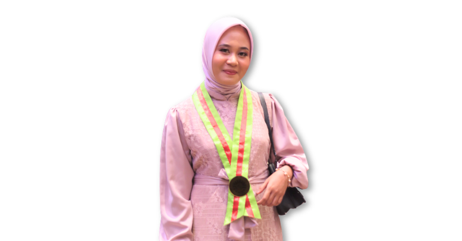

Ema Humaera
PPG PrajabatanSeminar Pendidikan Profesi Guru

Ema Humaera, S.Pd
Mahasiswa PPG Calon Guru Gelombang 1
Kampus PPG
Universitas Negeri Yogyakarta
Lokasi PPL
SMKN 5 Yogyakarta
Setiap pertemuan dan materi yang saya pelajari di semester 1 dan semester 2 meninggalkan jejak pemahaman tersendiri, hasil dari proses berpikir, mempertanyakan, dan memaknai yang kemudian saya rangkum dalam portofolio refleksi ini, sebagai bukti nyata pertumbuhan saya sepanjang semester 1 hingga semester 2 dan bekal bagi perjalanan saya sebagai calon guru.
Profil Calon Guru
Ema Humaera, S.Pd
Calon Guru Profesional
"Pendidikan adalah kompas yang menuntun nalar, sekaligus layar yang menangkap angin harapan untuk membawa setiap anak bangsa menuju dermaga impian mereka."
"Jangan hanya memberi mereka ikan atau jala, ajarkan mereka cara membaca arah bintang agar tak tersesat di tengah luasnya samudera pengetahuan."
Tentang Saya
Perkenalkan, saya Ema Humaera, biasa dipanggil Ema. Saya lahir di Bulukumba pada 2 Agustus 2000 dan merupakan anak pertama dari dua bersaudara. Saya merupakan alumni Program Studi Pendidikan Teknik Informatika dan Komputer, Universitas Negeri Makassar. Saat ini, saya sedang melanjutkan Pendidikan Profesi Guru (PPG) di Universitas Negeri Yogyakarta pada Program Studi Informatika.
Saya memiliki minat yang tinggi dalam bidang pendidikan, khususnya dalam merancang dan melaksanakan pembelajaran yang interaktif, bermakna, serta relevan dengan kebutuhan murid. Bagi saya, pendidikan tidak hanya berfokus pada transfer pengetahuan, tetapi juga menjadi proses penting dalam membentuk karakter dan mengembangkan potensi murid secara optimal dan berkelanjutan. Di luar kegiatan akademik, saya memiliki hobi traveling, memasak, dan membaca, yang turut memperkaya wawasan serta pengalaman saya dalam kehidupan sehari-hari.
Informasi Dasar
Nama Lengkap
Ema Humaera, S.Pd
NIM & Kelas
25105260447 - Informatika B
TTL
Bulukumba, 02 Agustus 2000
Riwayat Pendidikan
SMA Negeri 7 Bulukumba
IPA (2015-2018)
Univ. Negeri Makassar
S1 PTIK (2018-2022)
Univ. Negeri Yogyakarta
PPG Informatika (2026)
Pengalaman Mengajar
Saya memiliki pengalaman sebagai guru honorer di SMP Negeri 8 Bulukumba, yang menjadi salah satu langkah awal dalam perjalanan saya di dunia pendidikan. Pengalaman ini memberikan kesempatan berharga bagi saya untuk terlibat langsung dalam proses pembelajaran, berinteraksi dengan murid, serta memahami dinamika kelas secara nyata. Melalui pengalaman sebagai guru honorer ini, saya semakin yakin untuk menekuni profesi guru secara profesional. Hal ini menjadi motivasi bagi saya untuk terus mengembangkan kompetensi diri melalui Program Pendidikan Profesi Guru (PPG), agar dapat memberikan kontribusi yang lebih baik dalam dunia pendidikan.
Identifikasi Diri
Visi Pribadi untuk Pendidikan di Indonesia
Visi saya adalah melihat pendidikan di Indonesia menjadi tempat yang mampu mengembangkan potensi setiap murid tanpa membedakan latar belakang, kemampuan, maupun kondisi mereka. Saya ingin sekolah tidak hanya menjadi tempat untuk mengejar nilai, tetapi juga tempat yang membuat murid berani berpikir, berpendapat, bekerja sama, dan memiliki karakter yang baik. Bagi saya, keberhasilan pendidikan bukan hanya ketika peserta didik memperoleh nilai tinggi, tetapi ketika mereka memiliki bekal untuk menghadapi kehidupan, mampu menyelesaikan masalah, dan menjadi pribadi yang bermanfaat bagi lingkungan sekitarnya.
Visi Pribadi sebagai Calon Guru
Visi saya sebagai calon guru lahir dari pengalaman pribadi ketika duduk di bangku sekolah dasar. Saat kelas 1 SD, saya pernah menangis ketika ditanya tentang cita-cita karena belum mengetahui apa yang ingin saya capai. Namun, ketika memasuki kelas 2 SD, saya bertemu Ibu Hamsah, seorang guru yang sabar, tegas, penuh empati, dan mampu membuat saya merasa nyaman serta bersemangat dalam belajar. Dari beliau, saya akhirnya menemukan cita-cita untuk menjadi seorang guru. Pengalaman tersebut membentuk visi saya untuk menjadi guru yang tidak hanya menyampaikan materi, tetapi juga mampu menginspirasi, membimbing, dan mendampingi murid dalam menemukan potensi terbaik mereka. Saya ingin menjadi guru yang kehadirannya memberikan rasa nyaman, semangat belajar, dan dikenang karena ketulusan serta dedikasinya, dengan tetap menjaga hubungan yang sehat dan profesional. Sebagaimana Ibu Hamsah membantu saya menemukan arah dan cita-cita, saya berharap dapat membantu murid menemukan potensi, membangun kepercayaan diri, dan meraih masa depan mereka.
Hal yang Dilakukan untuk Mencapai Visi
Untuk mewujudkan visi tersebut, saya menyadari bahwa menjadi guru yang baik membutuhkan proses belajar dan pengembangan diri yang berkelanjutan. Oleh karena itu, saya akan terus meningkatkan kompetensi dalam penguasaan materi, strategi pembelajaran, dan pemanfaatan teknologi agar pembelajaran lebih bermakna. Saya juga akan berusaha mengenal karakter, minat, dan kebutuhan murid sehingga dapat menciptakan suasana belajar yang aman, nyaman, dan mendorong mereka untuk berani bertanya, mencoba, serta berkembang sesuai potensinya. Selain itu, saya akan membiasakan diri melakukan refleksi dan evaluasi setelah pembelajaran serta terbuka terhadap masukan dari rekan sejawat, murid, maupun orang tua. Saya percaya bahwa guru yang baik adalah guru yang terus belajar dan memperbaiki diri. Dengan menjaga ketulusan dan komitmen dalam mendampingi murid, saya berharap kehadiran saya tidak hanya memberikan pengetahuan, tetapi juga mampu menumbuhkan semangat, kepercayaan diri, dan inspirasi bagi mereka dalam meraih masa depan.
Peta Jalan (Roadmap) Karir Masa Depan
Sekarang-1 Tahun Pertama (2026-2027)
Fokus menyelesaikan studi PPG dan Lulus UKPPPG. Menyiapkan berkas CPNS/PPPK (KTP, KK, SKL, Transkrip) sejak jauh hari. Latihan soal SKD (TWK, TIU, TKP) serta mengikuti tryout untuk mengukur kemampuan. Plan B Realistis: Jika belum lolos CPNS/PPPK, langsung melamar sebagai Guru Honorer di sekolah negeri atau Guru Swasta, ini untuk mengumpulkan jam mengajar dan pengalaman nyata di kelas. Kemudian menerapkan modul ajar inovatif di sekolah tempat saya mengajar.
3-5 Tahun (Jangka Menengah)
Status: Sudah diangkat menjadi PPPK/Guru Tetap (jika belum, tetap aktif mengajar dan mendaftar PPPK setiap tahunnya). Aktif dalam MGMP untuk berbagi praktik baik. Pendidikan Lanjut: Mulai menempuh studi S2 (Magister Pendidikan/Informatika) sambil tetap mengajar. Fokus riset pada pengembangan media pembelajaran inklusif. Inovasi E-Modul: Merancang dan mengembangkan E-Modul Pembelajaran Informatika yang berbasis sistem, dirancang khusus agar dapat diakses dan digunakan oleh anak inklusi. Isi modul dibuat terstruktur dan berdiferensiasi sesuai kemampuan murid. Pengembangan Diri: Aktif mengikuti seminar, workshop, dan pelatihan pengembangan diri (baik luring maupun daring). Mulai belajar menulis buku (buku ajar atau buku non-fiksi pendidikan). Kontribusi Sosial: Merintis komunitas belajar di daerah tempat saya bekerja, khusus untuk anak-anak putus sekolah. Mulai menginisiasi berdirinya perpustakaan kecil untuk anak-anak putus sekolah dan orang tua yang masih buta huruf. Menabung Kecil: Kalau ada rezeki lebih, saya sisihkan sedikit untuk keberlanjutan perpustakaan atau komunitas. Tidak harus besar. Yang penting konsisten.
>5 Tahun (Jangka Panjang)
Menerbitkan 1 buku (buku ajar atau kumpulan refleksi mengajar. Tidak banyak, tapi itu karya nyata saya). Pemberdayaan Masyarakat: Komunitas belajar dan perpustakaan kecil yang saya rintis mungkin masih jalan seadanya kadang ramai, kadang sepi. Tapi saya tetap berusaha menjaganya agar anak-anak putus sekolah dan orang tua buta huruf di sekitar saya punya tempat untuk belajar, meskipun sederhana. Visi Abadi: Saya masih terus belajar menjadi guru yang baik. Kadang masih salah, kadang masih lelah, kadang masih bingung. Tapi saya ingin tetap hadir di kelas, mendengarkan murid, dan berusaha membawa semangat kecil setiap hari. Saya tidak perlu jadi seperti Ibu Hamzah secara sempurna cukup berusaha meniru kebaikannya, dan semoga itu cukup berarti bagi murid-murid saya.
Rencana Tindak Lanjut (RTL)
- ✦ Merapikan e-portofolio rutin.
- ✦ Membuat jurnal refleksi bulanan.
- ✦ Sertifikasi profesi tambahan.
- ✦ Kolaborasi dengan industri/DUDI.
Model Guru Ideal
Transformatif & Empatik
Teladan yang peka terhadap kondisi emosional dan potensi unik setiap siswa.
Refleksi Diri
Apa yang berubah dalam diri saya
setelah mengikuti PPG?
Sebelum mengikuti program Pendidikan Profesi Guru (PPG), saya memandang proses mengajar lebih pada transfer ilmu (transfer of knowledge) dari guru ke siswa. Fokus utama saya adalah menyelesaikan materi sesuai kurikulum. Namun, setelah melewati berbagai mata kuliah dan proses PPL, paradigma saya berubah drastis secara fundamental.
Perubahan Mindset
Saya kini menyadari bahwa guru adalah fasilitator pembelajaran. Saya mulai menerapkan Growth Mindset, meyakini bahwa setiap anak memiliki potensi unik yang bisa dikembangkan jika difasilitasi dengan tepat.
Peningkatan Kompetensi
Kemampuan saya merancang pembelajaran (Teaching at the Right Level) dan asesmen berdiferensiasi meningkat tajam. Saya belajar memetakan karakteristik peserta didik sebelum merancang modul ajar.
"Perubahan paling nyata yang saya rasakan adalah kemampuan untuk selalu melakukan refleksi. Setiap kali selesai mengajar di SMK Negeri 5 Yogyakarta, saya membiasakan diri untuk menganalisis apa yang berjalan baik, tantangan apa yang muncul, dan bagaimana saya bisa memperbaikinya. Saya belajar bahwa menjadi guru adalah menjadi pembelajar sepanjang hayat."
Filosofi Mengajar
Bagi saya, mengajar bukan hanya tentang menyampaikan materi, tetapi tentang bagaimana seorang guru mampu membantu murid berkembang sesuai potensi, kebutuhan, dan karakter belajarnya. Selama proses observasi, asistensi, hingga praktik pembelajaran terbimbing, saya menyadari bahwa setiap murid memiliki cara belajar yang berbeda. Ada murid yang cepat memahami materi melalui praktik langsung, ada yang lebih nyaman belajar melalui diskusi, dan ada pula yang membutuhkan pendampingan bertahap agar lebih percaya diri dalam belajar. Karena itu, saya percaya bahwa guru harus mampu menciptakan pembelajaran yang fleksibel, tidak terpaku pada satu metode, dan mampu menyesuaikan dengan kondisi nyata di kelas.
Pengalaman selama PPL juga membuat saya memahami bahwa pembelajaran yang bermakna adalah pembelajaran yang dekat dengan kehidupan murid. Ketika materi dikaitkan dengan dunia kerja dan pengalaman nyata, murid menjadi lebih aktif dan antusias dalam belajar. Hal ini saya rasakan saat mengajar materi pembuatan CV, pengolahan dokumen, dan pengolahan data Excel yang dikaitkan dengan kebutuhan industri tekstil maupun logam. Murid tidak hanya belajar menggunakan aplikasi, tetapi memahami manfaat keterampilan tersebut untuk masa depan mereka. Prinsip ini sejalan dengan pendekatan pembelajaran kontekstual dan teori konstruktivisme dari Lev Vygotsky yang menekankan bahwa pengetahuan dibangun melalui pengalaman, interaksi sosial, dan lingkungan belajar yang mendukung.
Dalam praktik pembelajaran, saya juga meyakini bahwa guru bukan satu-satunya sumber belajar di kelas. Guru berperan sebagai fasilitator yang membantu murid menemukan pemahamannya sendiri. Selama PPL, saya melihat bahwa murid lebih berani dan aktif ketika diberi kesempatan berdiskusi, bekerja kelompok, mempresentasikan hasil pekerjaan, serta saling membantu melalui kegiatan peer teaching. Pengalaman tersebut membuat saya semakin percaya bahwa pembelajaran yang baik adalah pembelajaran yang memberi ruang kepada murid untuk berpikir, mencoba, bertanya, dan belajar bersama. Prinsip ini juga berkaitan dengan teori social learning dari Albert Bandura yang menjelaskan bahwa proses belajar dapat terjadi melalui pengamatan dan interaksi dengan lingkungan sekitar.
Selain itu, saya percaya bahwa seorang guru harus memiliki sikap adaptif dan reflektif. Selama PPL, tidak semua pembelajaran berjalan sesuai rencana. Pada Siklus 1 misalnya, pembelajaran harus dilakukan tanpa laboratorium komputer karena digunakan untuk ujian. Kondisi tersebut mengajarkan saya bahwa guru harus mampu mencari solusi dan tetap menciptakan pembelajaran yang bermakna meskipun dengan fasilitas terbatas. Dari pengalaman tersebut, saya belajar bahwa keberhasilan pembelajaran tidak hanya ditentukan oleh media atau teknologi, tetapi juga kreativitas guru dalam mengelola proses belajar.
Saya juga meyakini bahwa hubungan yang baik antara guru dan murid menjadi dasar penting dalam pembelajaran. Murid akan lebih nyaman belajar ketika mereka merasa dihargai, didengarkan, dan tidak takut melakukan kesalahan. Oleh karena itu, saya berusaha menciptakan suasana kelas yang positif, memberi apresiasi terhadap usaha murid, dan membangun komunikasi yang terbuka selama pembelajaran berlangsung. Bagi saya, keberhasilan seorang guru bukan hanya dilihat dari tersampaikannya materi, tetapi dari bagaimana murid merasa percaya diri, mau terus belajar, mampu bekerja sama, dan dapat menggunakan pengetahuan yang dipelajarinya dalam kehidupan nyata maupun dunia kerja di masa depan.
Refleksi Mata Kuliah
Karya Inovasi Pendidikan
Media Pembelajaran Interaktif
Pengembangan modul digital interaktif untuk memudahkan pemahaman konsep praktik di SMK N 5 Yogyakarta.
Modul Ajar Berdiferensiasi
Penyusunan modul ajar berbasis proyek (PjBL) yang mengakomodasi gaya belajar visual, auditori, dan kinestetik.
Evaluasi Gamifikasi
Penggunaan platform kuis interaktif dengan elemen game untuk meningkatkan motivasi belajar siswa pada asesmen formatif.